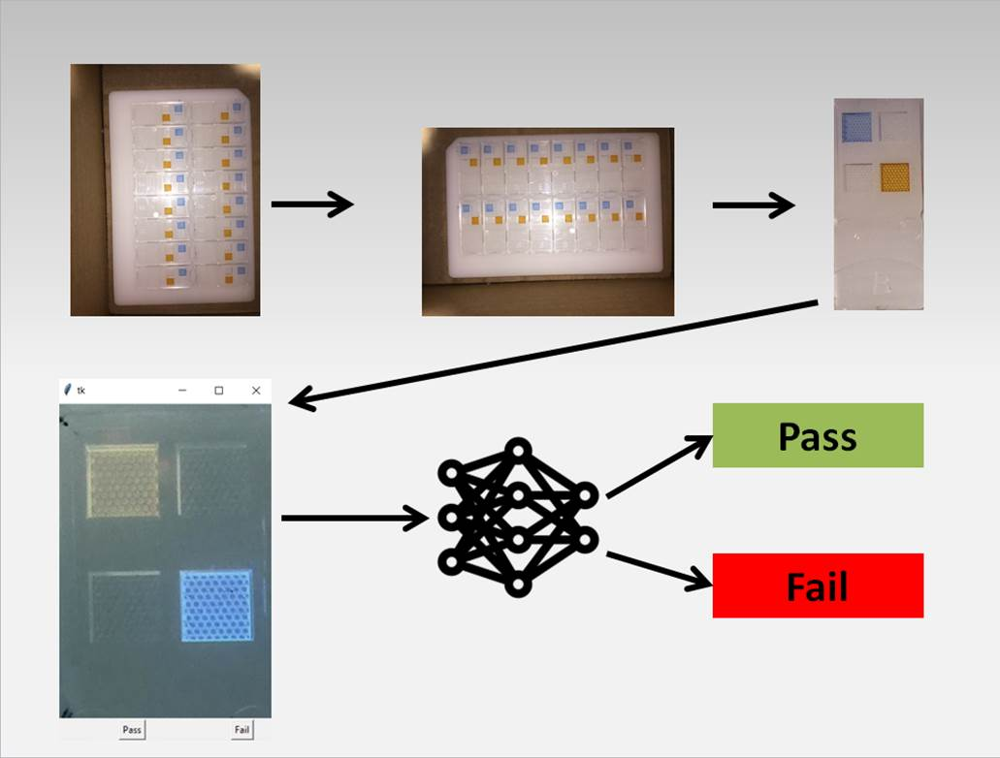
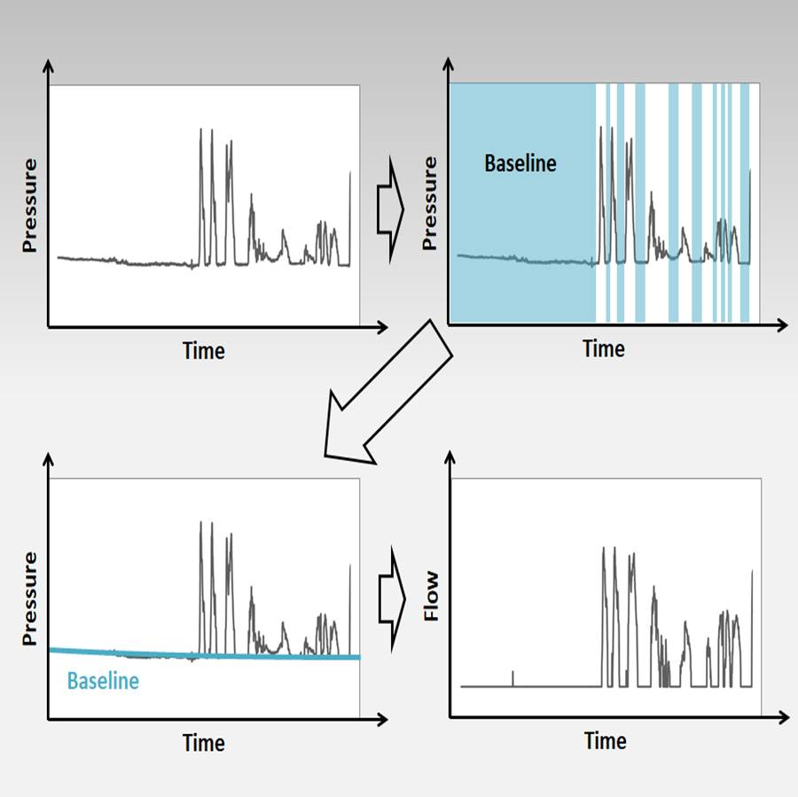

Nature Scraping
In this project I was curious to see what some of the trends in popular topics in scientific literature over time were. Since Nature is a top journal and has been publishing for a very long time, I decided to look at Nature Letters. Using Beautiful Soup 4 in Python, I was able to scrape the entirety of the journal archives and with a few other Python scripts I was able to extract the frequency of different words used over time. What I found was that in earlier years (around 1900), the top phrases of the Letters change very quickly, and recently we start to see the same popular terms in the top. It's not really a surprise when you think about it, but still interesting. Here is an animated plot showing some of the top terms over time. In addition, there are some interesting trends with how much they publish, how long the titles are, and more. Click here to read more.
CNN for Sensor Quality Control
 The company I work for manufactures color-based sensors and we want to find a better way to determine if a sensor is good or bad. The way these sensors are manufactured is in sheets of 16 sensors, so the idea is that we can snap a picture and have a trained convolutional neural net determine which (if any) of the sensors should be discarded based on visible defects. To make this, I started with a simple script to ensure the photos were all the in the right orientation, divided the photots into 16 areas (1 area per sensor), let a user select if the sensor passed or failed qc in a window (tkinter) to generate class labels, then ran a convolutional neural net to predict pass or fail based on image alone. Click here to read more.
Animated Bar Graph Generator
 So don't you hate when you want to make an awesome animated chart (like if you want to look at Nature word frequency over time) and you
don't want to do it in R? This is a nice little Python script using PIL that will take a data input from a formatted CSV
document and convert it to an awesome animated bar graph. Here is a GIF with some random numbers and titles to demonstrate.
There isn't a whole lot to talk about on this one, so here is a github link to the code.
So don't you hate when you want to make an awesome animated chart (like if you want to look at Nature word frequency over time) and you
don't want to do it in R? This is a nice little Python script using PIL that will take a data input from a formatted CSV
document and convert it to an awesome animated bar graph. Here is a GIF with some random numbers and titles to demonstrate.
There isn't a whole lot to talk about on this one, so here is a github link to the code.
Baseline Tracking Comparison
 The company I work for specializes in breath analysis with portable and wearable devices. An issue with flow in particular is how we measure it, which is with a differential pressure flow meter. The issue with this type of sensor is that it can have issues with baseline drift, especially if the sensor experiences movement (like you would expect in a wearable device). Since we have a one-way valve, we know that when the person is inhaling that we are at baseline. The question is: How do we determine when the person is inhaling using just the pressure signal? We had an algorithm developed for a microcontroller but we wanted to ensure it was working properly, so this algorithm uses Python to generate a reference for accurate assessment of baseline vs. exhalation breathing. Click here to read more.